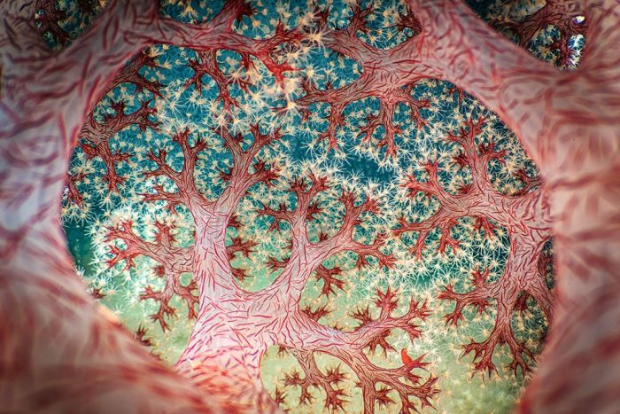

I like to experience nature with my head in the clouds and my hands in my pockets.
Over time, I also wanted to learn about the interesting things I had seen. So I started taking photos as a note to research once I got home or just things that I found cool.
I've had tons of fun experiencing and capturing these moments.
